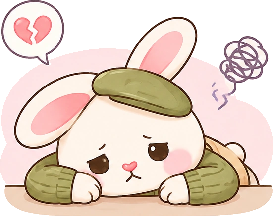
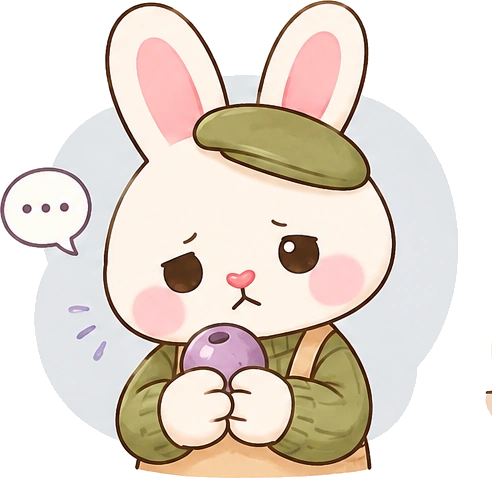

УФ‑лучи хуже проходят сквозь плотный тёмный цвет, поэтому на тёмных участках смола застывает дольше или не застывает вообще
💭 Тёмные цвета = больше времени на застывание
💡 Что делать?
Перед нанесением UV‑смолы покройте изделие акриловым лаком — он закрепит краску
После этого смола «схватится» за несколько минут
Избыток добавок и неправильная толщина
🎨 Избыток добавок
Много пигментов, блёсток или красителей блокирует УФ‑лучи
Правило: добавок не больше 10% от объёма смолы
📏 Толщина слоя
Тоньше 1 мм
Недостаточно материала для полимеризации — смола остаётся липкой
Толще 2–3 мм
УФ‑лучи не достают до центра — внутри мягко, может образоваться «пузырь» жидкой смолы

Краска и лак не просохли
Если вы покрасили изделие или покрыли лаком, обязательно дайте им хорошо высохнуть перед УФ‑смолой
⏳ Время сушки
Краска
≈ 20–30 минут
Лак
≈ 30-50 минут между слоями
⚠️ Что идёт не так?
Если слой плохо просох, УФ‑смола хуже «сцепляется» и не застывает нормально
Время отверждения может растянуться до 10 минут — это не норма
Норма: 1–2 минуты под лампой
🐾 Терпение = идеальный результат

Бракованная смола
Бывает: покупаете ту же смолу, что и раньше, но теперь она не просыхает и остаётся липкой. Это может быть брак
🛒 Что делать?
На маркетплейсах можно оформить возврат, даже если упаковка вскрыта
🔍 Как проверить смолу на брак
Нанесите немного смолы на «голую» глину и просушите под лампой
Если липкий слой не исчезает через 2–5 минут, дайте изделию «отдохнуть» 5–10 минут, затем снова под лампу
Если ничего не помогает — скорее всего, смола бракованная
📝 Проверь перед большой работой!
Если уже покрыли и всё липнет
Выход есть, даже если изделие уже готово!
✔️ Решение
Дайте смоле «отдохнуть»: уберите изделие из‑под лампы на 10 минут – за это время свободные молекулы смолы продолжают соединяться, и липкий слой часто исчезает сам
Если не помогло, нанесите тонкий слой акрилового лака поверх УФ‑смолы – лак «запечатает» липкий слой
💗 Второй шанс для твоих работ!
− МинусГлянец может немного приглушиться
+ ПлюсИзделие перестанет липнуть и будет полностью готово к использованию
· · ·
Хочешь узнать больше?
В Telegram‑боте «Глиняный гид» я собираю самые полезные инструкции, лайфхаки и разборы ошибок